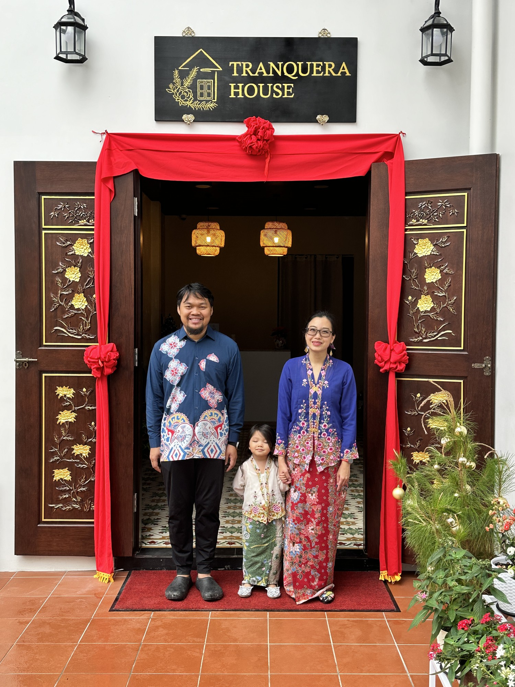
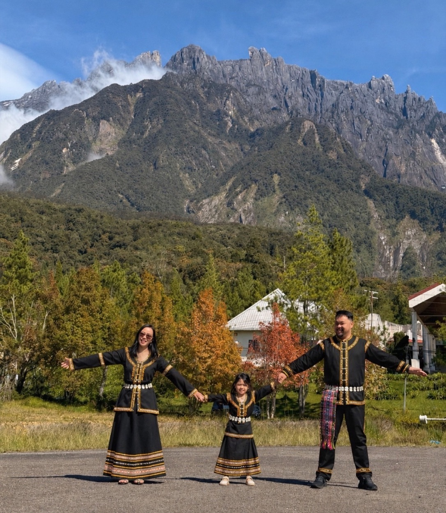
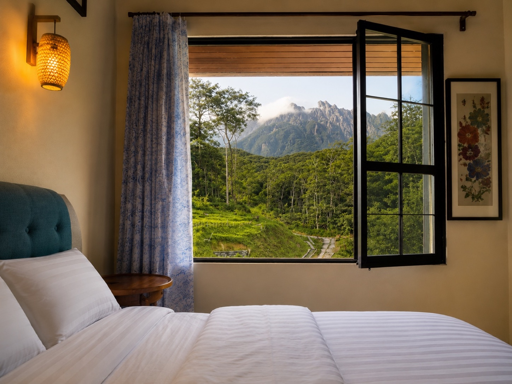
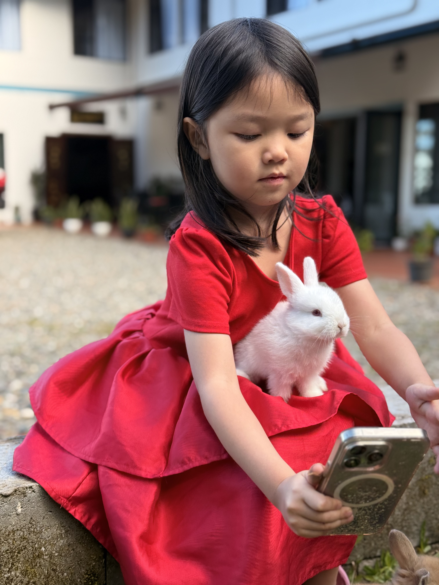

Nyonya Laksa
Our signature laksa from generations of Baba Nyonya family recipes, rich with coconut milk, aromatic spices and comforting flavours.
Stay, dine and experience authentic Baba Nyonya hospitality at the foot of Mount Kinabalu.
A Family Heritage House
Tranquera House is the story of two people from opposite ends of Malaysia. Shamus grew up in a Baba Nyonya family in Melaka, while Ailyn was born and raised in Sabah. Together, we chose to leave city life behind and build a home in the peaceful highlands of Mesilau.
We believe culture only survives when someone chooses to preserve it. That is why every meal, every room and every guest experience reflects our mission—to keep Baba Nyonya heritage alive while sharing it with the beauty and hospitality of Sabah.
More than a place to stay, Tranquera House is where Melaka's heritage finds a home beneath Mount Kinabalu.

Home-Cooked Baba Nyonya Cuisine
Every meal at Tranquera House is prepared by pre-order, never mass-produced. We begin cooking only after your meal has been pre-booked, ensuring every dish is freshly prepared with the care and attention we would give guests in our own home.
Our signature laksa from generations of Baba Nyonya family recipes, rich with coconut milk, aromatic spices and comforting flavours.

Fresh prawns gently cooked with pineapple and creamy coconut milk, balancing sweetness, richness and spice in every bite.

A comforting Peranakan classic, slowly braised with fermented soybeans, potatoes and traditional Melaka heritage flavours.
Rest in the Highlands

One Queen Bed
Wake up to the crisp mountain air and peaceful surroundings of Mesilau. Perfect for couples seeking a relaxing highland escape.
Check Availability
One Queen Bed + One Single Bed
Designed for families or friends, our Triple Room combines comfort and space, with peaceful views and the refreshing mountain air of Mesilau.

Two Queen Beds
Spacious and welcoming, our Family Room is perfect for families or small groups looking to relax together while enjoying the cool mountain air and peaceful surroundings of Mesilau.
Loved by Our Guests
Genuine experiences shared by guests who stayed and dined with us.
“Spotless rooms, top-notch amenities and a warm atmosphere that made us feel right at home. The staff went above and beyond.”
“A hidden gem in Mesilau with comfortable rooms, peaceful surroundings, a majestic Mount Kinabalu view and authentic Peranakan food.”
“Comfy rooms, welcoming owners, friendly staff and amazing Peranakan food. A true hidden gem.”
4.9 Google Rating
Trusted by guests who stayed and dined with us.
Discover our peaceful rooms, home-cooked Peranakan dining, mountain surroundings and the moments that make Tranquera special.





© 2026 Tranquera House. All Rights Reserved.